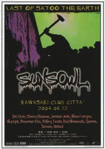
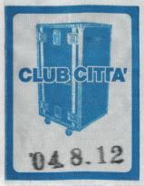
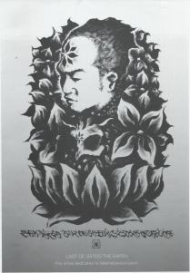
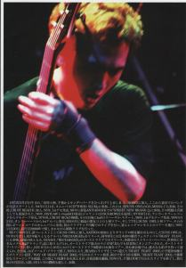
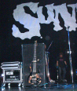
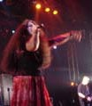
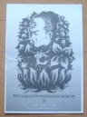

2004.08.12 川崎CLUB CITTA
LAST OF SATOO THE EARTH
出演: SUNS OWL・JURASSIC JADE・BAT CAVE
CHERRY BLOSSOM・MINOR LEAGUE
PANORAMA AFRO・PULLING TEETH
RED MAMMOTH・SPANAM・SURVIVE
UNITED・マイライト
 |
 |
 |
 |
●ＪＵＲＡＳＳＩＣ ＪＡＤＥ’Ｓ setlists
ドク・ユメ・スペルマ
G.D.G.
新曲3（Fight For ,What For）
新曲７（テロルの季節/前タイトル：Catch Me Who Can In The Rye）
新曲4(9月の詩）
新曲9（Divided Power,Reverse）
新曲1（くたばりやがれ）
メドレー（After Killing MamGo tothe dogs〜Go To The Dog〜鏡よ鏡）
●ＭＥＭＢＥＲ’Ｓ comment
ＨＩＺＵＭＩ
ＮＯＢ
GEORGE
ＨＡＹＡ
●ＡＬＢＵＭ
 |
BACK STAGE |
| (C)BYS RECORDS | |
 |
JURASSIC JADE |
| (C)Masato Ogawa | |
 |
LAST OF SATOO THE EARTH |
| (C)Masato Ogawa |
●BBS comment
明日！ 投稿者：藤井 投稿日： 8月11日(水)23時58分52秒
また忙しい藤井が登場するかもしれません。
写真撮影が大丈夫なら、また写します。それで、暴れます。Nobさんの前なのにHayaさんを見てエア・ドラムするかもしれません。（すみません）セット・リスト、メモります。紙とペンを持ちながらヘッド・バンギングとフィスト・バンギングするかもしれません。
笑わないで、演奏に集中してください。（笑）
明日、レコディン後の強烈なJJを首都圏の轟音に飢えた者達に叩きつけて下さい！
では！！
ご無沙汰です。 投稿者：NOB-JURASSIC JADE 投稿日： 8月12日(木)14時23分23秒
今日はさとぅの追悼ライブです。
リハーサルが無いので、会場入りは遅い時間で良いのですが、SUNS OWLのリハーサルが見たくて（さとぅに逢いたくて）、これから出かけます。
そこに、さとぅの姿が現実には無くても、俺には見えるという気がしてなりません。
さとぅ
沢山の人たちが、お前のことだけ考えてくれる、長い一夜が始まるね。
そして、いつまでも記憶に残る一夜が・・・。
会場で逢おう！
PRAY FOR… 投稿者：FUJII-JURASSIC JADE FAN 投稿日： 8月13日(金)01時57分40秒
The gig in this night is special....What I thought will be written after morning.
...And I'm sorry,'cause I left without saying good-bye to members of JURASSIC JADE.
I Guess that spirit of Mr.Satou is watching us, is enjoying music & live.
Best wishes...
ありがとうございました。 投稿者：NOB-JURASSIC JADE 投稿日： 8月13日(金)21時15分38秒
昨夜は沢山の方々にお越しいただいて感謝です。
ステージ転換中にSUNS OWLのビデオが流れてましたね。演奏シーンより、なにげないさとぅの姿に涙が止まりませんでした。イヴェントのすべてが終わった時、SURVIVEネモっちゃんが「終わっちゃった・・・」と呟いたのが、俺の中で木霊になってます。
ステージ裏に戻ってきたさとぅのアンプ・ベース・花束の前で記念撮影をしました。
同じアングルで撮ったのに、HIZUMIの時だけ沢山の「光の輪」が写り込んでました。
不思議ではありますが、そんな現象を当たり前のようにも感じます。
SUNS OWLがこの試練を乗り越えて、益々輝く存在になりそうな予感を持ちました。
俺達もSUNS OWLを勇気付け（ほんのわずかだろうけど）、そしてSUNS OOWLに刺激されて頑張りたいと感じた一夜でした。
8/12の川崎チッタ 投稿者：さる 投稿日： 8月13日(金)22時28分17秒
Last Of Satoo The Earth、最後まで堪能しました。
今回のライブは普通の企画と違う意味があり、感慨がひとしおでした。
その中でのJJライブ、持ち時間が短い中でその存在感を十二分に発揮できてたと思います。
その証拠にJJで退散させて頂いた嫁共々クビの裏にシップしてます。
バーカウンターに行く途中他のお客さんからも「ジュラシックジェイド、スゲー」って声が聞こえニヤリ。
うちの嫁は「メンバーの人みんながいつも以上に凄かった♪HIZUMIさんもいつも以上に可愛かった♪」
と身分不相応な事を言っていました。その事実をここでチクッておきますね。
もう私は次回ライブ以上に(殴)10月6日が楽しみで楽しみで。
いえいえ次回のライブも楽しみにしていますから。
またよろしくお願いします。
http://home.g03.itscom.net/boana/
…というわけで、 投稿者：藤井（普通もーど） 投稿日： 8月13日(金)23時42分40秒
今日は、普通の、「フジイコウジ」モードで書きます。
感慨深い、ライヴではありましたが、僕は、JURASSIC JADEのライヴの始まる前、SEの中、3〜4分、祈りました。それは、Satooさんへの祈りでもあり、またいろいろな俺を見つめているだろう、先立っていった人々への想いでもありました。「Satooさん、彼らと一緒に俺たちを見ているんだろうね？」と思いながら、目を伏せていました。
ライヴは、いつもより、（というか名古屋よりも）荒々しい感じのパフォーマンスに感じられました。それと、今日、昔の「BURRN！ JAPAN」に日時が分からないけれど’89年春ぐらいのチッタで行なわれたCASBAH、DOOM、UNITED、JURASSIC JADEのライヴのレポートが出ていて、それを見ていたら、「マイクを通さないで直接客席に怒鳴りかけるHizumi」というのが書いてあり、Hizumiさんのダイレクトなコミュニケーションは全く変わっていないと思いました。
楽曲でいうと、”テロルの季節”のオープン・ハイハットでのイントロの刻みが八王子ではじめて披露されたときより、「ザリッ」という感触があり、あの時より、ロックだなぁ、と思いました。
始めて見たお客さんも、JURASSIC JADEの存在感を圧倒的と感じたはずです。
さて、会場であった方々…
＞さるさん
ちゃんと送りました。ナイト役を果たしました。（笑）
＞QUEEN （IN LOVE？？）さん
間違って一瞬、出口から東に歩いてすみません。昔のチッタの入り口と間違えちゃったんだよね。でも、町並みはきれいになってたよね。
＞Cherry Witch＠GOTHIC LOGICさん
いつもと違ういでたちだったから、はじめ、違う人かと思っちゃった。パンフレット読んだかな？
＞（⌒-⌒）ノ＠GOTHIC LOGICさん
人間の姿で良かったよ。（笑）またね〜〜♪
＞Maki＠WANAZONOさん
今度ちゃんと飲みましょうね！イングヴェイの新作は来年アタマみたいです。
＞サッチンマン＠G.G様
ビックリしたよ！来てたとはね！！でも、30代のオヤジの顔を触るのはやめなさい。（笑）俺は、ホントは物凄いエロオヤジなんだぞ！（変貌）ちゃんと帰れたかな？遠いところ、頑張ってきたよね。
＞Mibo姫様
あなたも、ホント、エレガントなのに、暴れますね〜。横にいたから、そんなに見てないけど…。先に何も言わず帰ってしまってごめん。また会おう！
＞あつさん
ほんと、あなたの物凄いパワーには参りますよ！！あれでそのまま愛知へと帰ったの？俺にそのパワーを下さい！！
＞Kuma＠BOLD FAT MISSILEさま
いきなり入場口から現れて、一瞬、目を疑ったよ！でも元気そうで何より！！
＞月影狂＠WANAZONO様
また、見に行きますので、よろしく！
さて、明日はお台場でコミック・マーケットに出展です。それでは〜。
アッ、9月、豊四季で…（謎）。会社休もう！
JURASSIC JADEの行くところ、例え、イスカンダルでも因果地平でもどこでも行きましょう。お金と時間が許すならば！！
それと…＞ゆきさん、今秋はよろしく！！
すでに新案 投稿者：藤井 投稿日： 8月14日(土)02時13分33秒
連続書き込みすみません。
怒涛の拷問：レコ発までに新曲作りませんか？想像もつかないような曲！！
(無題) 投稿者：SUNSOWL ＭＺＭ 投稿日： 8月14日(土)09時35分36秒
１２日お疲れさまでした！！お世話になりました。そして、これからも宜しくお願いします。ずっと長いことこのシーンで闘ってきたジュラシックジェイドの背中はとてもデカク温かかったです。ＳＵＮＳＯＷＬもそんなバンドになりたいと思います。話は尽きませんが、とにかく今後とも宜しくお願いします！！
数日経って・・・。 投稿者：NOB-JURASSIC JADE 投稿日： 8月15日(日)14時12分32秒
数日経って、「さとぅの発病・闘病・死・不在」、そしてそれを間近に受け止めた「SUNS OWLの心」をことあるごとに考えてしまいます。
SURVIVEネモッチャンの言葉は悲しみと共に俺の中に響き続けていますが、「終わらないなぁ」という気持ちも繰り返し繰り返し浮かんでくるんです。
＞さる 様
本当に最後の最後まで楽しんでくださったようで、嬉しいです。
HIZUMIがいつもより丁寧に語りかけていたのが印象的でした。
「私の声が聞こえるか？」は会場のみんなへの語りかけであると共に、さとぅへの呼びかけです。
アルバム聞いてください。
＞藤井 様
気持ちが入りすぎて、乱暴な演奏になってしまった。
新曲は作りたいね、俺自身は。今の気持ちを込めてね。
メンバーに嫌がられるので覚悟が必要。
＞SUNSOWL ＭＺＭ 様
あの日の主役でありながら、出演者・関係者のサポートお疲れ様。顔色悪くて心配した。
さとぅを励ます時に参加出来なかったこと・お別れの時に参加させてくれたことに、俺たちは「意味」を見出す。
お前の中で、凄く大きな成長が起きたね。
「マジマ大人になったねぇ」とおかあさんHIZUMIは呟いていました。（笑）
これからもよろしくです。
今後の日程 投稿者：藤井 投稿日： 8月15日(日)14時46分9秒
12/29、30、名阪ツアーしましょうかねぇ…。もしかしたら。そしたら、またHayaさん宿教えて下さいね。
とりあえず、車検で金がぶっ飛ぶので、あんまり旅行できませんが、静岡、仙台とか行きたいな〜。三島に親戚いるけど…（笑）。
確実に行けるのは、柏（豊四季）、目黒、筑波です。
アルバムのジャケ、いいですね〜！
こんな解釈、KIDAさんには申し訳ないけど、「超人バロム1」のドルゲ魔人（クチビルゲ＋ヒャクメルゲ）みたいです。ボクの好みですね〜〜。（笑）
真面目な話、「終わらないなぁ」というのは、ずっとあると思います。いつも見ているんですよ、僕らを…。
遅くなりましたが 投稿者：mibo 投稿日： 8月16日(月)09時28分11秒
12日はお疲れ様でした。
ステージが大きかったので、遠い感じがするかと思いましたが、近く感じてうれしかったです。
一人の人を中心にあれだけの人が集まって、一つのことを思うって凄いことだと思いました。
ライブは、十二分に堪能させてもらいました。ありがとうございます。
あまり後ろを見てなかったけど、なんだか背中が温かく感じました。。他の人も楽しんでるんだなって感じました。
次回のライブ、楽しみにしています。（新譜も・・・）
継ぐ者として 投稿者：直蔵 投稿日： 8月17日(火)03時57分4秒
先日は良い時間でした。
有難う佐藤、有難う皆様。
私は実家で毎年恒例「火垂るの墓」を観ております。
同じ事はできない。同じ想いにもなれん。何が出来るとも言えん。
ただなんか解らんが、この辺にある熱いもんを継ぐ者として。
やり倒そう、同志諸君！
バミューダ☆バガボンド 直蔵
http://www.bermudavagabond.com
ありがとうございます・・・ 投稿者：SUNS OWL GO 投稿日： 8月17日(火)13時43分48秒
ほんとにありがとうございました。長谷川さん、大変だったんですね、そんな時にありがとうございます。あなた達の言葉はホントに心に響きます。自分が忙しく、事の本質を見誤りそうになった時もあなた達の言葉に何度も何度も救われました。自分が唯一、一人の人間としての気持ちになり話ができ、一人の人間として励ましていただいて、自分の小ささに気が付かせていただきました。バンドマンとして、人間として、こういうシーンのなかに生きる男として（すいません、HIZUMIさん笑）、あなた達のようになりたい。あなた達のような先輩がいる事、とても誇りに思います。改めてお礼を言います。ありがとうございました！あいつも同じ気持ちのはずです。これからは新生SUNS OWLとして１からのスタートです。これからもよろしくお願いいたします！ありがとうございました。
GOさんの言われる通りです。 投稿者：藤井 投稿日： 8月17日(火)22時12分52秒
いつも、アホなことばっかり書き込んだり、失礼かも知れないことを言っている大人になれぬ大馬鹿のフジイですが、Nobさんにはいろいろと今年に入ってから、自分の心に響く言葉をいろいろと頂きました。
Goさんとは立場が全然違いますが、本当にいつも、JURASSIC JADEのメンバーさんには助けてもらっています。
ありがとうございます！
思い出しました。 投稿者：藤井 投稿日： 8月19日(木)08時28分36秒
12日のライヴで、Hizumiさんが「今日は、飛行機が落ちてきた日なんだよ…」と言った時、何のことか、分からなかったのですが、そうです！あれは、日航機事故の日だったんです！
坂本九さんらが亡くなったあの事故から19年ももう経つのですね…。
僕は、あの事故で凄く尊敬していた（面識はないけれど）方を亡くして、悲嘆にくれました…。
連続書き込みをお許し下さい。
いつもありがとうございます 投稿者：ぽき別府 投稿日： 8月19日(木)23時59分34秒
いつもいつもありがとうございます。先日のオールナイトでも本当に感謝です。本当はもっと早くお礼をと思ったのですが、携帯の機種変更直後にＰＣがトンデしまいまして・・・。ＰＣはすべてデーターが無くなってしまい、携帯は使いこなすには程遠い状態です。機械音痴ぶりをいかんなく発揮しております。
(無題) 投稿者：jjcrew 投稿日： 8月21日(土)23時07分36秒
＞ぽき別府様
お疲れー！あの後、Yさんがうちらの目の前で寝に入っちゃって、ちょっと恐かったっす（いつのまにかドアとドアの間に移動してたけど）。
PC飛んじゃったの、辛いね。でも機械音痴って…、アナタはプロのDJでしょ！？？（笑）
あっ！ 投稿者：藤井 投稿日： 8月21日(土)23時18分5秒
Nobさん、更新作業中と見た！！みなさん、色んなコンテンツ見た方がいいよ〜〜！（笑）
寂しさがまします。 投稿者：NOB-JURASSIC JADE 投稿日： 8月21日(土)23時23分46秒
夏が往きつつありますね。
＞藤井 様
ジャケは一見インパクト重視に見えるかもしれないけど、「深い」んだよ。
見開いた（見開かされた）瞳が見るものは（見させられているものは）なんだ？！
発売されたら、他の絵や歌詞をじっくり見てくださいね。
＞mibo 様
ありがとうございました。
温かい祈りのような感情を、あの場が持てたことは素晴らしいし、そこに加われて良かった。そんな場に立ち会ってくれて感謝です。また、見てください。
＞直蔵 様
お疲れ様でした。
生きてる俺たちはやり続けて、やり倒してやりましょう！
＞ぽき別府 様
あの日どんな気持ちでしたか?どうか、教えてください。
＞SUNS OWL GO 様
ありがとう。お疲れ様。
あまりに丁寧で真摯な書き込みに言葉を失った。なんと応えて良いのか迷って、いつの間にか数日が過ぎてしまった。申し訳ない。
俺たちは実は、何度も同じステージを踏んでる訳じゃないんだよね。
以外に少ないんだ。
でもね、俺は（俺達は）SUNS OWLとの関わりに特別な何かを感じてんだ、勝手に。
そんな中で起きた一連のダメージと悲しみは、俺達を大きく揺さぶったよ。
そして、今も揺さぶられ続けてるんだよ。
年齢が上だから（随分ね・・・）人生の先輩ではあるかもしれない。
でもね、俺達がなりたいのは、SUNS OWLの音楽のライバルなんだ。
これは才能の問題だから、少々生意気かもしれないけど、俺は頑張りたいね・・・。
いや、頑張るよ！GOちゃん。
またね。
BACK TO